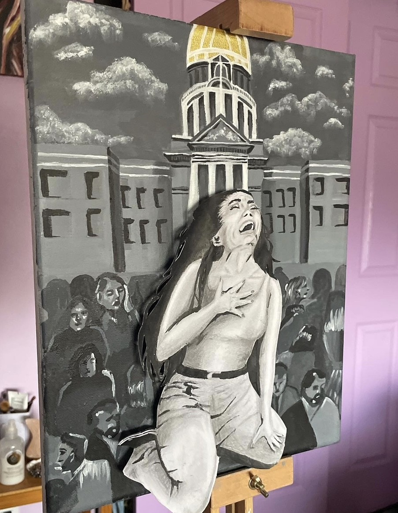
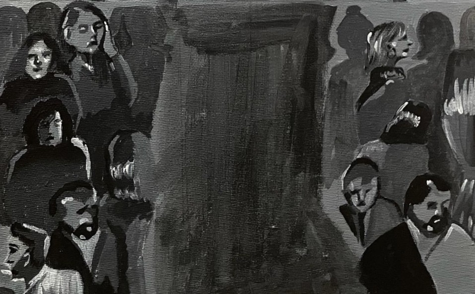

Mental Health in Colorado


! Trigger Warning !
*Mentions of suicide (statistics)
HB-1303 is a new Colorado law that adds only sixteen beds to the Fort Logan Facility and another
125 to small community treatment facilities (Increase Residential Behavioral Health Bed,2022).
With how many people who need help this act is nowhere near good enough in solving the mental
health crisis.
The mental health crisis has reached an all-time high. COVID-19 became a graver issue,
causing people to lose their jobs and leave school; the pandemic brought an end to any sense of
normality in the world, and mental health took a turn for the worse. Now at an all-time low.
Colorado is ranked 51st in mental health, the lowest ranking in the country. In 2012, Colorado's
suicide rate of 19.1 per 100,000 residents was the nation's sixth highest, and that number has
only gone up since then. Colorado's suicide rate has risen 34% since 2004 (“Mental Health America”
2022). The state's rate has been consistently rising for the last 15 years
Suicide attempts are taken to the nearest hospital, where they are put on a max of 72-hour hold.
Once their 72 hours are up, the hospital releases them; they cannot send them to more long-term
care, or even any kind of therapy because there are not enough beds for everyone who needs help.
For most people struggling with severe mental health problems, 72 hours isn't enough time to get
people struggling stable, and they often end up back in the hospital within two weeks or end up
in jail.
Prisons have become a resource to get people struggling with mental health off the street.
Unfortunately, prisons are not equipped to help people struggling with mental health; they
lack resources and medications, and the justice system has an internal bias against people with
mental health issues. The Colorado Division of Youth Corrections estimates that 24% of juveniles
in the juvenile justice system are diagnosed with serious mental illness. Prison's main goal is
not rehabilitation; the system does not teach or help prisoners learn to manage their mental
health issues.